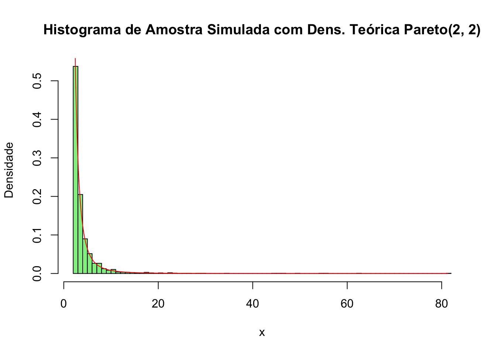

Derive the probability inverse transformation\(F^{-1}(U)\)and use the inverse transform method to simulate a random sample from the Pareto(2, 2) distribution. Graph the density histogram of the sample with the Pareto(2, 2) density superimposed for comparison.
Como explicado no Exemplo 3.3 (p.51), \(U\) e \(1-U\) possuem a mesma distribuição \(Uniform(0,1)\), logo é mais simples utilizar \({b} * {{(u)}^\frac{-1}{a}}\).
Por se tratar de função de distribuição acumulada, é necessária derivá-la para encontrar a função densidade de probabilidade, logo:
\[
f(x) = F'(x) = 0 - (a)*(b^a*(-1)*x^{-a-1}) \Rightarrow a*b^a*x^{-({a+1})}, x \geq b
\]
set.seed(1)# Valores iniciais dados pelo problemaa <-2b <-2n <-2000u <-runif(n)x <- b * (u)^(-1/a)print(summary(x))
Min. 1st Qu. Median Mean 3rd Qu. Max.
2.000 2.303 2.880 4.024 4.075 81.294
hist(x, breaks =100, prob =TRUE, col ='lightgreen' , main ="Histograma de Amostra Simulada com Dens. Teórica Pareto(2, 2)" , xlab ='x', ylab ='Densidade')y <-sort(x)fy <- a * b^a * y^(- (a +1))lines (y, fy, col ='red', lwd =1)

b. O método Acceptance-Rejection - Exercício 3.7 do livro da Rizzo. (Exemplo 3.7 faz isso para Beta(2,2). Para simplificar vocês podem resolver a questão somente para α e β maiores que 1.)
3.7 Write a function to generate a random sample of size n from the Beta(a, b) distribution by the acceptance-rejection method. Generate a random sample of size 1000 from the Beta(3,2) distribution. Graph the histogram of the sample with the theoretical Beta(3,2) density superimposed.
Resposta
Vamos calcular a função densidade de probabilidade (PDF) para a distribuição Beta com parâmetros \(\alpha = 3\) e \(\beta = 2.\)
Definição Geral da PDF da Distribuição Beta
A função densidade de probabilidade (PDF) da distribuição Beta é dada por: \[f(x; \alpha, \beta) = \frac{x^{\alpha - 1} (1 - x)^{\beta - 1}}{B(\alpha, \beta)}\]
onde \(B(\alpha, \beta)\) é a função beta: \(B(\alpha, \beta) = \frac{\Gamma(\alpha) \Gamma(\beta)}{\Gamma(\alpha + \beta)}\).
Para \(\alpha = 3\) e \(\beta = 2\) , a PDF se torna: \[ f(x; 3, 2) = \frac{x^{3 - 1} (1 - x)^{2 - 1}}{B(3, 2)} = \frac{x^2 (1 - x)}{B(3, 2)} \]
Cálculo da Função Beta B(3, 2)
A função beta para \(\alpha = 3\) e \(\beta = 2\) é: \(B(3, 2) = \frac{\Gamma(3) \Gamma(2)}{\Gamma(3 + 2)}\)
No exercício, para os valores de \(\alpha = 3\) e \(\beta = 2\), temos uma distribuição unimodal com um pico, assimétrica e levemente incilinada para a direita.
function_Beta <-function(n, a, b) { k <-0 y <-numeric(n) count <-0while (k < n) { u <-runif(1) x <-runif(1)if (x^(a -1) * (1- x)^(b -1) > u) { k <- k +1 y[k] <- x } count <- count +1 }print(paste("Quantidade de iterações: ", count))return(y)}y <-function_Beta(1000, a =3, b =2)
a. Exercício 5.3 do livro da Rizzo. (Opcional: gera da exponencial truncada ao intervalo [0;0,5] e compara a variância.)
Compute a Monte Carlo estimate\(\hat{\theta}\) of \[
\theta = \int_0^{0.5} e^{-x} \, dx
\]by sampling from Uniform(0, 0.5), and estimate the variance of\(\hat{\theta}\). Find another Monte Carlo estimator\(\hat{\theta}^*\)by sampling from the exponential distribution. Which of the variances (of\(\hat{\theta}\)and\(\hat{\theta}^*\)) is smaller, and why?
sendo que \(u\) é gerado a partir de uma distribuição \(Uniform(0, 0.5)\).
b. Variáveis Antitéticos: Exercício 5.10 do livro da Rizzo. (Opcional: Trocar esse exercício para 5.9, mas saiba que a função não é monotônica [pode quebrar em pedaços monotônicos] e o limite superior é infinito [precisa fazer alguma transformação de variáveis x-> 1/x funcionaria])
Use Monte Carlo integration with antithetic variables to estimate
\[ \int_{0}^{1} \frac{e^{-x}}{1 + x^2} \, dx
\]
and find the approximate reduction in variance as a percentage of the variance without variance reduction.
Resposta
c. Importance Sampling - Exercício 5.14 do livro da Rizzo.
Obtain a Monte Carlo estimate of\[\int_{1}^{\infty} \frac{x^2}{\sqrt{2\pi}} e^{-x^2/2} \, dx
\]by importance sampling.
Resposta
d. Stratified Importance Sampling - Exercício 5.15 do livro da Rizzo. (Não esquece de usar os quantís da função importância para definir os intervalos.)
Obtain the stratified importance sampling estimate in Example 5.13 and com- pare it with the result of Example 5.10.
Resposta
3) Inferência com Monte Carlo
a. MSE (EQM): Exercício 6.1 do livro da Rizzo. (aproveite os códigos para a Normal com contaminação)
Estimate the MSE of the level\(k\) trimmed means for random samples of size 20 generated from a standard Cauchy distribution. (The target parameter \(\theta\) is the center or median; the expected value does not exist.) Summarize the estimates of MSE in a table for \(k = 1,2,...,9\).
Resposta
b. Poder de testes: Exercício 6.3 do livro da Rizzo. (aproveite os códigos do Exemplo 6.9)
Plot the power curves for the t-test in Example 6.9 for sample sizes 10, 20, 30, 40, and 50, but omit the standard error bars. Plot the curves on the same graph, each in a different color or different line type, and include a legend. Comment on the relation between power and sample size.
Resposta
c. Níveis de confiança: Exercício 6.4 ou 6.5 do livro da Rizzo
6.4 Suppose that\(X_1, . . . , X_n\) are a random sample from a from a lognormal dis- tribution with unknown parameters. Construct a 95% confidence interval for the parameter \(\mu\). Use a Monte Carlo method to obtain an empirical estimate of the confidence level.
6.5 Suppose a 95% symmetric\(t\)-interval is applied to estimate a mean, but the sample data are non-normal. Then the probability that the confidence interval covers the mean is not necessarily equal to 0.95. Use a Monte Carlo experiment to estimate the coverage probability of the \(t\)-interval for random samples of $X^2(2) data with sample size \(n\) = 20. Compare your \(t\)-interval results with the simulation results in Example 6.4. (The \(t\)-interval should be more robust to departures from normality than the interval for variance.)